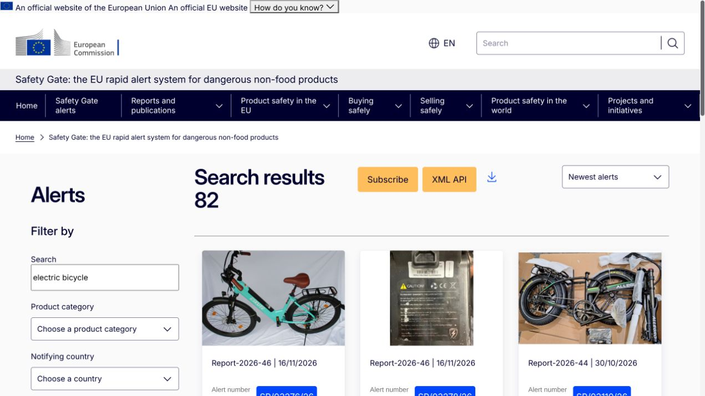

Safety Gate 实测：从 82 条电动自行车预警反推出货检查表
实际检索欧盟 Safety Gate 的“electric bicycle”预警，并结合英国 OPSS 与美国 CPSC 案例，把火灾、受伤、触电和资料缺口转化为电动车贸易商可执行的产品与出货检查。
实测方法：先把召回库当作风险样本库
2026 年 11 月 25 日，我们在欧盟 Safety Gate Alerts 的公开检索页输入“electric bicycle”，保持其他筛选项为空，并按最新预警排序。页面返回 82 条结果。这个数字会随着新增预警、数据修订和搜索逻辑变化，本文只记录测试当日界面，不把它当作市场事故率或品牌质量排名。
召回数据库的价值不是告诉采购团队“哪些产品绝对安全”，而是展示监管机构已经观察到的失效模式、产品识别字段、风险、证据缺口和处置方式。未检索到某个型号也不等于通过认证；正式上市仍需按目标市场法规、适用标准和具体配置完成评估。
首屏就出现三类信号：受伤、火灾与触电
测试结果首屏同时出现整车的受伤风险、整车的火灾风险，以及充电器的触电或火灾风险。它提醒电动车贸易商，安全评审不能只问电芯品牌和电池报告：车架与焊接、制动和控制逻辑、紧固件、充电器、电气防护、说明书及标签都可能成为风险入口。
实务上不要只收藏预警链接。每看到一条相关预警，应记录产品、型号或批次、风险类型、失效描述、采取的措施、通报国家、发布日期和原始链接，再标记它对应自己的哪个 SKU、部件和验证文件。

两个独立案例说明：资料完整与生产一致性缺一不可
英国 OPSS 在 2025 年发布的一份无品牌电动自行车产品安全报告中，指出该产品缺少有效技术文件、生产控制证据、标签、标识和说明书；在无法证明整车、电池和充电器符合要求的情况下，进口在边境被拒。这个案例说明，测试报告之外还要能把报告与具体产品、BOM、生产批次和随车资料连接起来。
美国 CPSC 2024 年的 Pacific Cycle 电动自行车召回则指出，管理电池充电的线束装配不当，可能在充电时过热并引发火灾。它揭示另一类缺口：即使设计文件存在，装配过程、首件确认、线束走向、端子锁止和终检仍可能决定实际风险。两类案例合在一起，形成“设计与资料证据 + 量产过程证据”的双重检查。
把外部预警接入内部闭环，而不是只转发给采购群
欧盟委员会的企业义务页面要求企业认真处理消费者投诉；发现产品可能危险时，应立即采取补救行动，通知制造商或进口商、启动或配合召回，并通过 Safety Business Gateway 向主管机关报告。不同角色、产品和国家的具体法律责任需要专业复核，但管理逻辑很明确：外部预警、内部投诉和供应商异常应进入同一个升级流程。
建议建立五列风险台账：外部信号、可能失效模式、受影响 SKU 或部件、现有证据与缺口、负责人和截止日。结论只能是“不相关并有证据”“需要补证”“需要追加测试”“暂停出货/销售并升级评估”之一，不能以“供应商说没问题”关闭。

给电动车贸易商：把预警转成 12 项出货检查
产品与电气：核对整车型号和功率/速度控制逻辑；确认车架、前叉、制动和关键紧固件版本；核对电芯、BMS、电池包、线束、连接器与充电器的明确料号；检查充电器输出与电池系统匹配；确认关键线束走向、固定、防磨和端子锁止；把进水、短路、过充、过温和合理可预见误用纳入风险评估。
文件与追溯：确认测试样品与量产 BOM 一致；检查报告、声明和适用标准版本；核对标签、警告和说明书；记录电池、充电器与整车序列号或批次的关联；保留首件、过程和终检证据；预先定义停止出货、隔离库存、通知经销商和联系终端客户的触发条件。任何高风险缺口都应在出货前由合格人员升级评估。
每月 45 分钟：建立可持续的预警复盘
每月固定检索目标市场官方数据库，关键词至少覆盖 electric bicycle、e-bike、battery、charger 和主要零部件；只挑与现有或计划 SKU 相关的预警进入台账。质量、采购、产品和售后共同用 45 分钟判断关联性、证据缺口和负责人，并在下月复盘关闭情况。
先跟踪四个指标：新预警评审及时率、需要补证的 SKU 数、逾期整改项、从风险确认到停止出货或隔离库存的时间。召回库不能代替测试、合规评估或法律意见，但它能持续提供真实世界的失败信号，帮助团队把“没出过问题”改成“能证明我们检查过什么”。